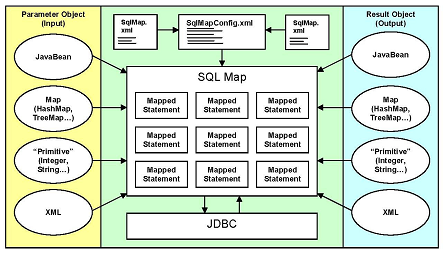

This section describes the concepts and features of iBATIS, and how to download and use it.
What is iBATIS?
iBATIS is an ORM (Object Relational Mapping) framework that enables programmers to handle DB more conveniently and helps to handle persistence logic by mapping the relationship between DB tables and JAVA objects. In other words, if iBATIS is used, CRUD (create, query, modify, delete) can be easily done in the DB by mapping DB tables and JavaBeans (SqlMap XML file).
In the way of programming using the existing JDBC, SQL statements were written in the program source, but using iBATIS, the SQL statements are separated from the program and written separately in the XML file. This reduces the burden of programmers programming when using existing JDBC. In addition, if the user wants to change the SQL, the SQL can be changed freely because the user only needs to change the SQL statement in the XML file rather than modifying the program as before.
The following figure shows how to communicate SQL written in xml (SqlMap.xml) in iBATIS with DB.

When the user writes each SQL statement for CRUD in SqlMap XML file and writes these files in SqlMapConfig XML file, it automatically creates mapped statements objects through iBATIS API and executes SQL statements in DB through it.
For more detailed architecture of iBATIS, please refer to the following site: [http://ibatis.apache.org]
iBATIS Download
To use iBATIS, iBATIS related jar files are required. This jar file can be downloaded from http://ibatis.apache.or/java.cgi. When you unzip the downloaded file, a jar file exists in the lib directory inside the extracted directory. The user can use this jar file to link with iBATIS. If the iBATIS package is abates-2.3.4.726.zip, the abates-2.3.4.726.jar file is located in the lib directory of the extracted directory.
In the previous version of iBATIS, ibatis-comm.jar and ibatis-sqlmap.jar files were required, but in iBATIS version 2.3.4, the ibatis-comm.jar file and ibatis-sqlmap.jar file are abates-2.3.4.x.jar files. In this document, abates-2.3.4.726.jar was used.
{kind=link}